语言服务
语言服务工具为开发者提供如下功能：语法高亮、自动补全、定义跳转、查找引用、诊断报错、选中高亮、悬浮提示、签名帮助和重命名等。
说明：
- 项目根目录 (PROJECTROOT)：仓颉语言服务插件以开发者当前打开的文件夹作为项目根目录 PROJECTROOT，且仅对该目录下的仓颉源码提供语言服务支持。
- 模块命名：如如未显式指定模块名称，默认将项目根目录 PROJECTROOT 名称作为模块名，便于导入 src 目录下的包。
- 源码支持范围：PROJECTROOT/src 下称为src 下仓颉源码（支持语言服务）；除了 src 下仓颉源码，项目根目录 PROJECTROOT 下的其他所有源码称为非 src 下仓颉源码（支持语言服务）；项目根目录 PROJECTROOT 之外的仓颉源码称为外部源码（暂不支持语言服务）。
- 导入能力：非 src 下仓颉源码中，每个文件夹都作为一个包，包名的声明和包的编译方式与src 下仓颉源码顶层包（即 default 包）处理方式保持一致。非 src 下仓颉源码可以导入标准库的包以及src 下仓颉源码中自定义的包，非 src 下仓颉源码的包无法被其他包导入。
- 宏展开依赖：仓颉语言服务的宏展开依赖宏的动态库，如果涉及自定义宏展开的代码，需要先编译出动态库，然后再启动语言服务。
- 日志开关：仓颉语言服务的日志默认关闭。开发者如果需要开启语言服务日志输出，可以在插件设置中开启Cangjie Log选项后重启 VSCode，日志可以在插件安装目录下的log.txt文件查看。
代码高亮
VSCode 打开仓颉工程中的 .cj 文件，即可看到代码高亮效果。VSCode 不同主题显示的代码高亮颜色不同，支持对代码运算符、类、注释、函数、关键字、数字、包名、字符串、变量等进行高亮显示。
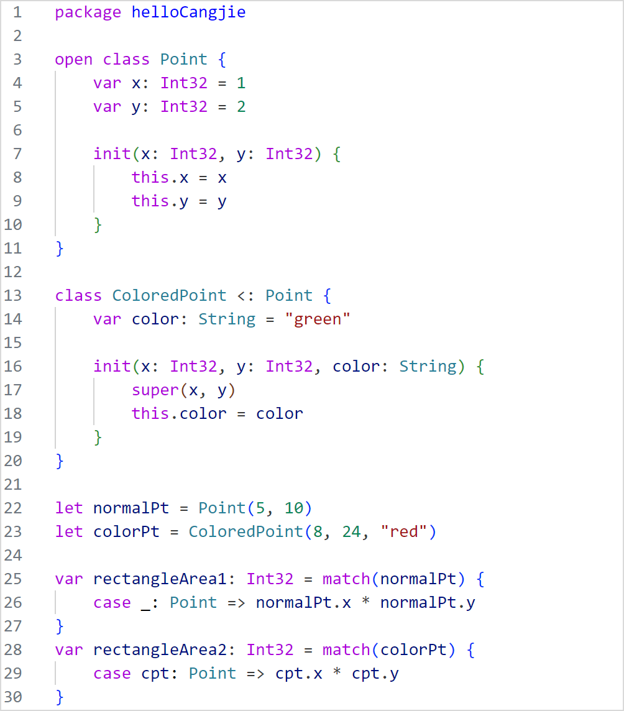
自动补全
VSCode 打开仓颉工程中的 .cj 文件，输入关键字、变量或 . 符号，在光标右侧提示候选内容。可以用上下方向键快速选择想要的内容（需要切换为系统默认输入法），使用 Enter 键或 Tab 键补全。
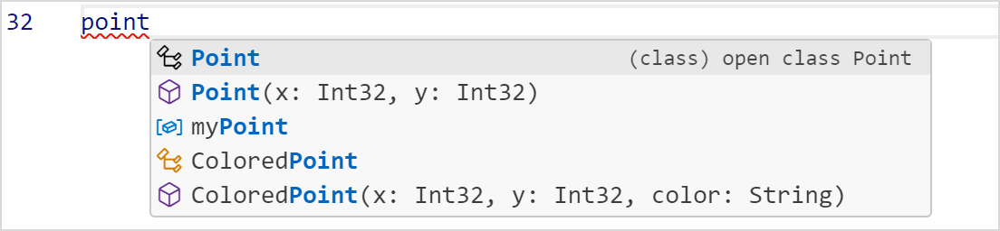
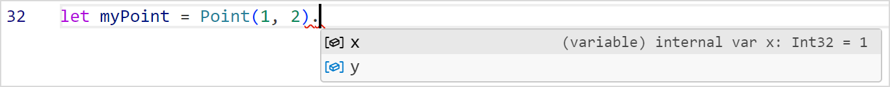
对于带参数的函数或者泛型提供模块化补齐，即当函数有参数或者带泛型时，选择函数补齐项之后会出现参数格式化补齐，如下图所示。填充数值之后按下 Tab 键可以切换到下一个参数补齐，直至模块化补齐结束，或按下 Esc 键提前退出除当前选中模块。
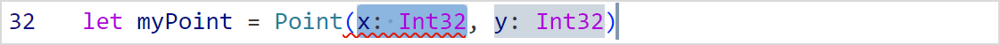
定义跳转
VSCode 打开仓颉工程中的 .cj 文件，鼠标悬停在目标上方，按下 Ctrl 键并单击鼠标左键触发定义跳转；或使用鼠标右键单击目标符号，选择 Go to Definition 执行定义跳转；或按下快捷键 F12 执行定义跳转。
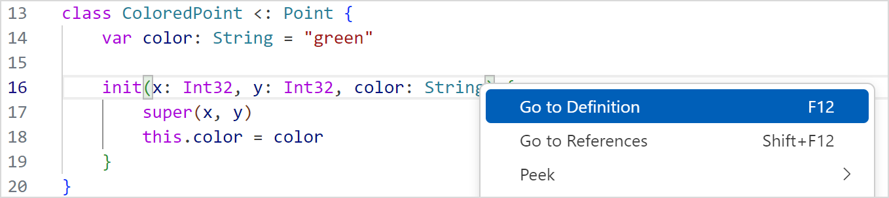
说明：
在符号使用的地方使用定义跳转会跳转到符号定义处，支持跨文件跳转。 在符号定义处使用定义跳转，如果此符号没被引用过，光标会跳转到符号左端。 如果符号在其他地方被引用，会触发查找引用。
跨语言跳转
语言服务插件支持 Cangjie 语言到 C 语言的跳转功能，VSCode 打开仓颉工程中的 .cj 文件，鼠标悬停在 Cangjie 互操作函数上方，按下 Ctrl 键并单击鼠标左键触发定义跳转；或使用鼠标右键单击目标符号，选择 Go to Definition 执行定义跳转；或按下快捷键 F12 执行定义跳转。
前置条件
- 本地安装华为自研 C++ 插件。
- 在仓颉插件上设置需要跳转的 C 语言源码存放目录。
- 在当前工程下创建 build 文件夹，存放 compile_commands.json 文件（该文件可通过 cmake 命令生成），用于创建指定文件夹的索引文件。
跳转效果
foreign 函数会在开发者设置的目录下查找对应的 C 语言函数，若找到则跳转至 C 语言源码的函数位置。除上述场景外均保持插件原有的定义跳转。
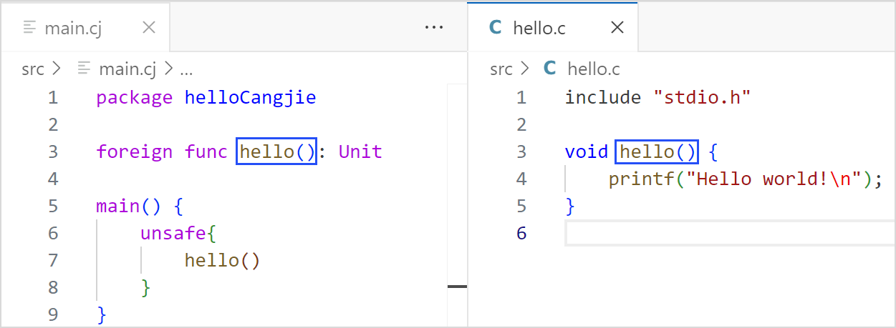
查找引用
VSCode 打开仓颉工程中的 .cj 文件，使用鼠标右键单击目标符号，选择 Find All References 执行符号引用预览，单击预览条目，可以跳转到对应引用处。
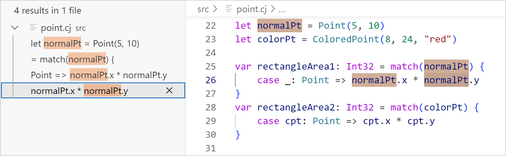
诊断报错
VSCode 打开仓颉工程中的 .cj 文件，当源码文件出现不符合仓颉语法或语义规则的代码时，会在相关代码段出现红色波浪下划线，如下图所示，当鼠标悬停在上面，可以提示相应的报错信息。修改正确后，诊断报错自行消失。
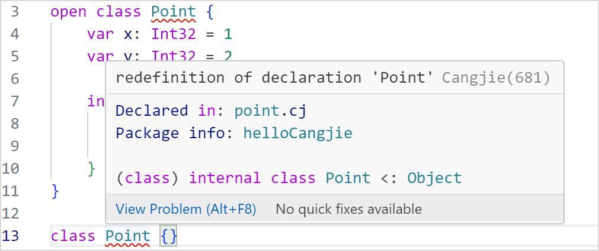
选中高亮
VSCode 打开仓颉工程中的 .cj 文件，光标定位在一个变量或函数名处，当前文件中该变量的声明处以及其使用处都会高亮显示。
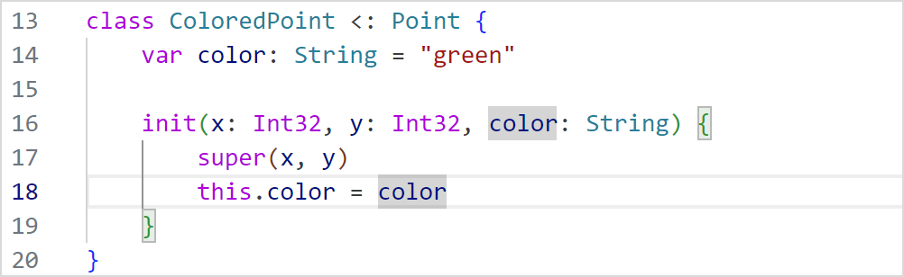
悬浮提示
VSCode 打开仓颉工程中的 .cj 文件，光标悬浮在变量处，可以提示类型信息。
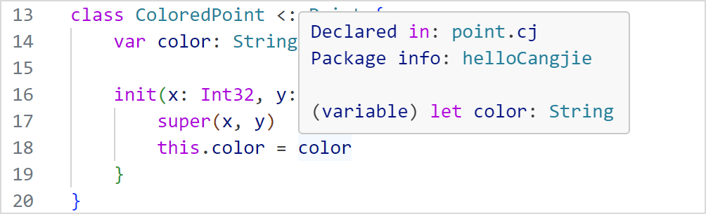
悬浮在函数名处，可以提示函数原型。
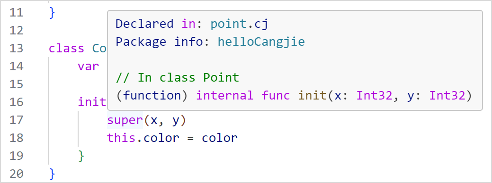
定义搜索
VSCode 打开仓颉工程中的 .cj 文件，同时按下 Ctrl 键和 T 键，弹出搜索框，输入想要搜索的符号定义名，会显示出符合条件的搜索结果。单击搜索结果条目，可以跳转到对应的定义位置处。
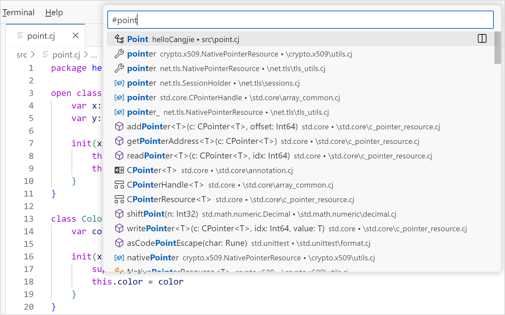
目前支持搜索的定义类型有：class、interface、enum、struct、typealias、toplevel 的函数、toplevel 的变量、prop、enum 构造器、成员函数和成员变量。
重命名
VSCode 打开仓颉工程中的 .cj 文件，光标定位在想要修改的自定义名称上，右键选择 Rename Symbol 或按下快捷键 F2 打开重命名编辑框。
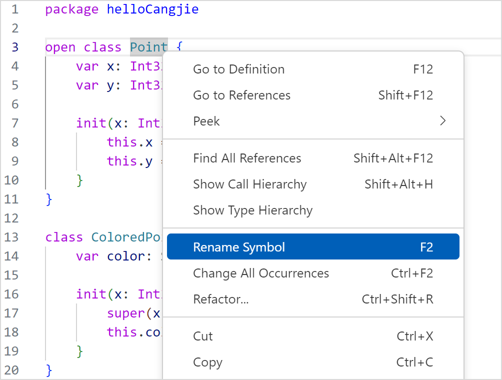
编辑完毕按下回车键，完成重命名的实现。
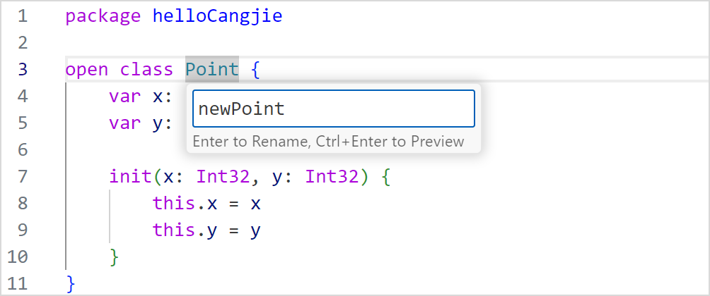
目前支持重命名的类型有：class、interface、enum、struct、func、type、泛型、变量和自定义宏。
大纲视图显示
VSCode 打开仓颉工程中的 .cj 文件，在左侧 OUTLINE 视图中显示当前文件的大纲。目前支持两层结构的显示，第一层主要为 toplevel 中定义的声明，第二层主要为构造器及成员。
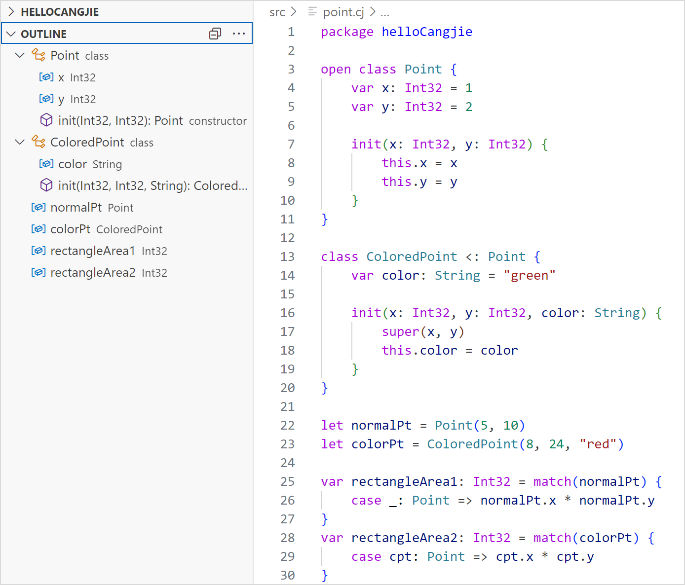
目前支持大纲视图显示的类型有：class、interface、enum、struct、typealias、toplevel 的函数、toplevel 的变量、prop、enum 构造器、成员函数和成员变量。
面包屑导航
VSCode 打开仓颉工程中的任意 .cj 文件，光标定位在符号处，点击面包屑导航，显示符号当前所处的位置，以及该符号在整个工程中的位置路径。
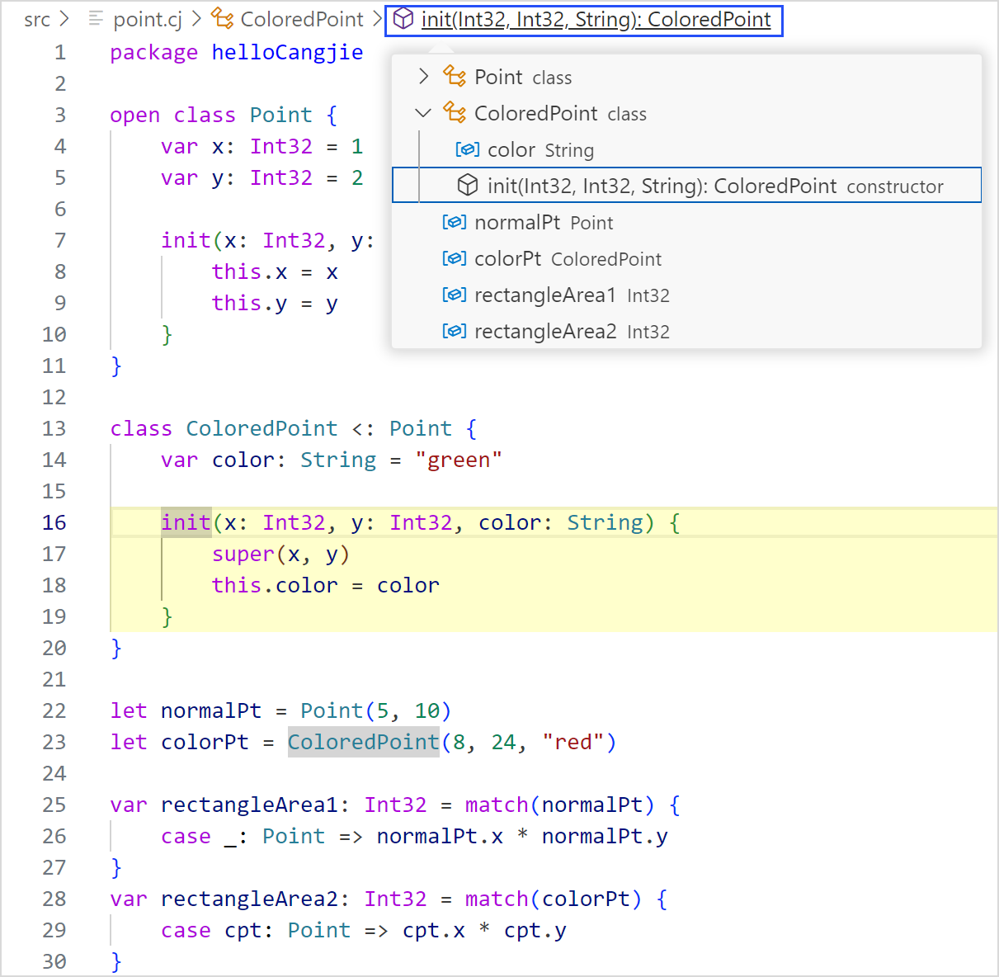
目前支持面包屑导航的类型有：class、interface、enum、struct、typealias、toplevel 的函数、toplevel 的变量、prop、enum 构造器、成员函数和成员变量。
签名帮助
VSCode 在输入左括号和逗号时会触发签名帮助。触发后，只要还在函数参数范围内，提示框会一直随光标移动（可与补全共存）。如下图所示，开发者可以看到当前函数的参数信息，以及当前函数位置参数的高亮效果。
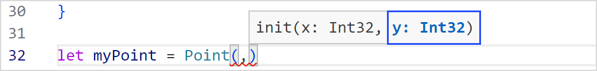
显示类型层次结构
VSCode 打开仓颉工程中的 .cj 文件，光标定位在想要查看的自定义名称上，右键选择 Show Type Hierarchy，在左侧就会显示该类型层次结构。Object 类型默认为所有类的父类，该功能下不会显示。
目前支持显示层次结构的类型有：class、interface、enum 和 struct。
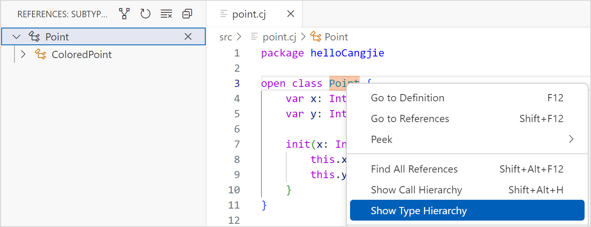
单击如图标记所示位置，可以在显示子类和父类之间切换。
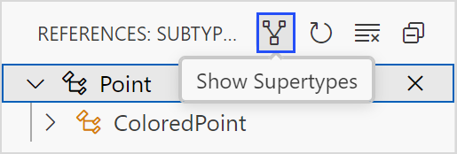
调用类型层次结构
VSCode 打开仓颉工程中的 .cj 文件，光标定位在函数名上，右键选择 Show Call Hierarchy，在左侧就会显示该函数的调用类型层次结构。
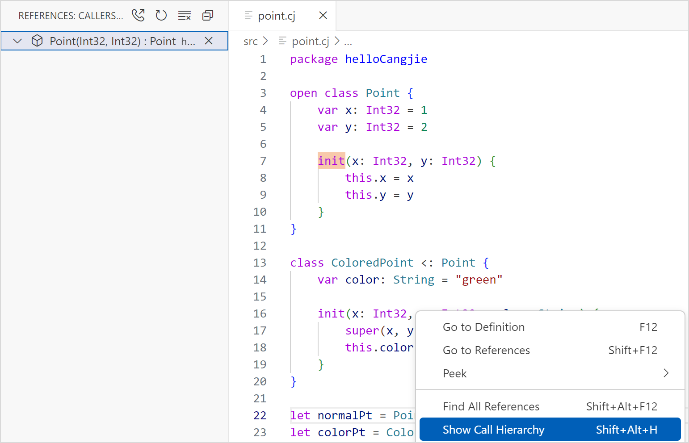
通过单击标识位置可以在显示调用函数和被调用函数之间切换。
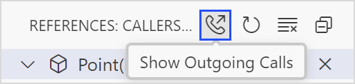